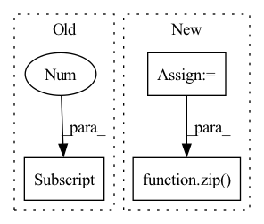

Pattern ID :2718
Before Change
y[1][..., :4] /= s[0] // scale
y[1][..., 0] = img_size[1] - y[1][..., 0] // flip lr
y[2] [..., :4] /= s[1] // scale
return torch.cat(y, 1), None // augmented inference, train
else:
return self.forward_once(x, profile) // single-scale inference, trainAfter Change
if augment:
img_size = x.shape[-2:] // height, width
s = [1, 0.83, 0.67] // scales
f = [None, 3, None] // flips (2-ud, 3-lr)
y = [] // outputs
for si, fi in zip( s, f) :
xi = torch_utils.scale_img(x.flip(fi) if fi else x, si)
yi = self.forward_once(xi)[0] // forward
// cv2.imwrite("img%g.jpg" % s, 255 * xi[0].numpy().transpose((1, 2, 0))[:, :, ::-1]) // saveIn pattern: SUPERPATTERN
Frequency: 6
Non-data size: 3
Instances Fragment ID: 9035081
Project Name: jeffwang0325/image-identification-for-self-driving-cars
Commit Name: 1d17b9af0f68ee97f9edc5f10fea51e9af9ef14e
Time: 2020-07-24
Author: glenn.jocher@ultralytics.com
File Name: models/yolo.py
M Class Name: Model
N Class Name: Model
M Method Name: forward(4)
N Method Name: forward(4)
M Parent Class: nn.Module
N Parent Class: nn.Module
M File Name: models/yolo.py
N File Name: models/yolo.py
M Start Line: 85
M End Line: 96
N Start Line: 84
N End Line: 98
Before Change
// slice causal mask to the appropriate query chunk windows - no padding need to be accounted for
mask_start_pos = ind * chunk_size
mask_end_pos = mask_start_pos + q_chunk.shape[1]
mask_range = slice(mask_start_pos, mask_end_pos)
causal_mask_slice = self.causal_mask[mask_range]
After Change
q_chunks = q.split(chunk_size, dim = 1)
causal_mask = self.causal_mask[:(n - 1)]
causal_mask_chunks = causal_mask.split(chunk_size, dim = 0)
for ind, (q_chunk, causal_mask_chunk) in enumerate(zip( q_chunks, causal_mask_chunks) ):
// slice the keys and values to the appropriate frames, accounting for padding along frames dimension
Fragment ID: 9035096
Project Name: lucidrains/nuwa-pytorch
Commit Name: b6fb033589485bb8d6bf7b125651da2fb740610d
Time: 2022-01-03
Author: lucidrains@gmail.com
File Name: nuwa_pytorch/nuwa_pytorch.py
M Class Name: Sparse3DNA
N Class Name: Sparse3DNA
M Method Name: forward(3)
N Method Name: forward(3)
M Parent Class: nn.Module
N Parent Class: nn.Module
M File Name: nuwa_pytorch/nuwa_pytorch.py
N File Name: nuwa_pytorch/nuwa_pytorch.py
M Start Line: 539
M End Line: 557
N Start Line: 539
N End Line: 546
Before Change
stacked = torch.cat(stacked, dim=2)
key = self.bands[-1] // "full"
x = self.net[key](input)
x = torch.cat([stacked, x], dim=1)
x = self.d2block(x)After Change
sections = [sum(sections), n_bins - sum(sections)]
x_valid, x_invalid = torch.split(input, sections, dim=2)
x = self.band_split(x_valid)
x_bands = []
for band, x_band in zip( bands, x) :
x_band = self.net[band](x_band)
x_bands.append(x_band)
x_bands = torch.cat(x_bands, dim=2) Fragment ID: 9035051
Project Name: tky823/dnn-based_source_separation
Commit Name: 8fb5cd5f4f8b4a435d058aef6204904f657abea0
Time: 2021-06-06
Author: 40362510+tky823@users.noreply.github.com
File Name: src/models/d3net.py
M Class Name: D3Net
N Class Name: D3Net
M Method Name: forward(2)
N Method Name: forward(2)
M Parent Class: nn.Module
N Parent Class: nn.Module
M File Name: src/models/d3net.py
N File Name: src/models/d3net.py
M Start Line: 70
M End Line: 85
N Start Line: 73
N End Line: 97